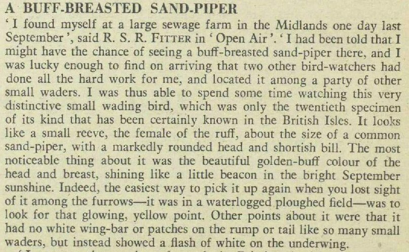
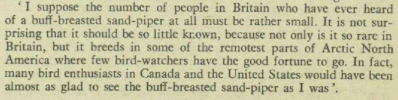

Tuesday, January the 1st, 2013
back to: title, date or indexes
Dobson, the out of print pamphleteer, was an intermittent diarist. At certain periods in his life, he maintained a voluminous, almost demented daily journal. At other times he made only scattered and vestigial scribblings, and there are also whole stretches where he fell completely silent, at least as a diarist. Surprisingly, there has been as yet no attempt to marshal all the extant texts into a published edition. Here, however, is Dobson's diary entry written sixty years ago to the day, on the first of January 1953:
Cabbage stalks in swans' blood for breakfast. Then I went for a trudge along the towpath of the filthy old canal. Stopped to gaze at cows—the cows gazed back. Spent untold hours slumped at my escritoire struggling with my pamphlet in progress, Farming With Gnomes. The problem is I know little about farming and even less about gnomes. Why, then, asked my inamorata Marigold Chew, did I choose the topic in the first place? She fails to grasp the intricate workings of what I have decided to dub “Dobson Praxis”, a praxis that itself may be the subject of a future pamphlet.
When the time came to sharpen my pencil I could not find the pencil sharpener, so instead I picked up this week's copy of The Listener and read a fascinating article about a buff-breasted sandpiper. From a careful reading—and rereading—I deduced that this is some sort of bird, though what it is doing hanging around at a sewage works is beyond me. If I had wings and the power of flight I am by no means certain that I would choose to wallow in sewage when I could take wing and fly to, oh I don't know, somewhere less noisome and noxious.
Actually, I note that the writer calls it a sewage farm rather than a sewage works. Perhaps this is a suitable type of farm for gnomes. I shall have to embark upon further research.
Pig innards and peas for supper.

Hooting Yard on the Air, January the 10th, 2013 : “Dobson's Diary 1.1.53” (starts around 00:23)
Hooting Yard on the Air, June the 15th, 2017 : “On Crutched Friars” (starts around 17:09)